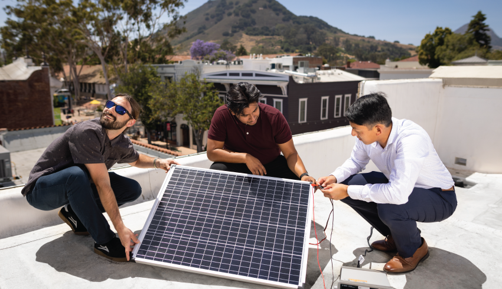

A short message about why this moment matters for the Bailey College.
Thank you for your generous interest in this transformational bridge between the Bailey College and the CIE. It has been such a pleasure to know and work with you over the past five years. You are uniquely positioned to help us with this ambitious and impactful vision, as you know both the CIE and Bailey better than any other supporter.
You mentioned in the past how your own entrepreneurship work with faculty transformed your life. That's exactly what this is about.
Contained on this page is information on our vision, and linked via PDF at the bottom is an easy-to-share one-sheet that includes funding details.
A few things I want you to know:
The Bailey College has been doing this work for four years. Dr. Erik Sapper has built a program that is producing real outcomes, and the model is ready for permanence. Your gift would not be starting something. It would be cementing something that already works. The Summer Innovation Fellows that you've previously supported are a part of this program, and students like this would greatly benefit from a strengthened bridge with the CIE and embedded connections to ideas across all colleges.
The endowment structure matters here. It's not just a funding mechanism. It's the signal to the rest of Cal Poly, and to every college that follows, that innovation is foundational, not optional. With your support, we'd be honored to lead the university in cementing this partnership.
I'd love to find time in the next two weeks to discuss any questions you have. In the meantime, please reach out anytime.
With gratitude,

The Center for Innovation and Entrepreneurship is one of Cal Poly's most distinctive programs. It is rooted in Learn by Doing, which has defined a Cal Poly education for more than a century: students don't study a problem, they solve one. They don't read about a company, they build one.
For most of the CIE's history, that work has flowed naturally from Business and Engineering. Those colleges have a clear pipeline into entrepreneurship, and the CIE has served them well. But the next chapter of the CIE, and the next chapter of innovation in California, will be defined by the disciplines that have been quieter in this conversation.
A biologist designing a precision diagnostic so urinary tract infections can be treated before they become dangerous. A chemist building coatings that last longer and pollute less. A physicist working on energy systems that can reach communities that don't have them. A mathematician modeling the water that has to last another century in California. These are not abstract academic exercises. They are problems that, solved, make the world measurably better. And the students working on them are sitting in classrooms across the Bailey College of Science and Mathematics right now.
For four years and through donor support, Dr. Erik Sapper has led the Bailey College Innovation Initiative as our Faculty Innovation Lead, a program designed to give science and mathematics students the structure, mentorship, and infrastructure to move discoveries out of the lab and into the world. The initiative now includes:
Bailey students have already taken on real problems. One team is developing precision diagnostics for urinary tract infections, a condition that affects millions of women each year and is too often misdiagnosed. Another is building drug design software to help researchers combat disease faster and more affordably. Another is working on algae-based recovery supplements, drawing on the ocean's resources to support human health.
Different problems, different disciplines, the same instinct: science should make people's lives better, and students who learn to build will spend their careers doing it.
The Endowed Faculty Innovation Lead for the Bailey College of Science and Mathematics is the first of six. It is the proof of concept and the keystone for a network that will eventually link every college at Cal Poly back to the CIE through faculty who know their disciplines deeply and who believe their students can build a better world.